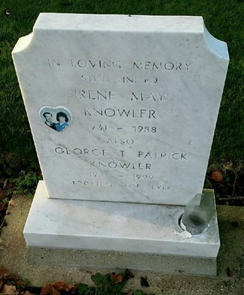

George Thomas Patrick Knowler 1931 - 1999
[ Home ] | [ Calendar ] | [ Surnames Index ] | [ Family History ]The son of George Knowler (a farm horseman) and Amelia SpelmanGeorge Knowler, the second cousin once-removed on the mother's side of Nigel Horne, was born in Thanet, Kent, England on Jul 30, 19311,2,3,4,5 and. He married Irene Spelman (with whom he had 5 surviving children Carole M, Kathleen J, Susan A, Diana I and Alison J) in Dover, Kent, England on Jan 15, 19556. On Sep 29, 1939, he lived at Saint Joseph's School, Sevenoaks Road, Orpington, Kent1.
He died on Nov 21, 1999 in Dover4,5 and was buried at Boatmans Hill Cemetery, 22 Woodnesborough Road, Sandwich, Kent after Nov 21, 1999.
Parents
- George Thomas was born on Sep 2, 1901
- Amelia Winifred was born on Oct 11, 1895
Citations
- 1939 Register - Findmypast (was recorded at this address)
- England & Wales deaths 1837-2007 - Findmypast
- England & Wales, Birth Index: 1916-2005 Online publication - Provo, UT, USA: The Generations Network, Inc., 2008.Original data - General Register Office. England and Wales Civil Registration Indexes. London, England: General Register Office. © Crown copyright. Published by permission of the Cont
- England & Wales, Death Index: 1984-2005 Online publication - Provo, UT, USA: The Generations Network, Inc., 2007.Original data - General Register Office. England and Wales Civil Registration Indexes. London, England: General Register Office. © Crown copyright. Published by permission of the Cont
- England Billion Graves cemetery index - Findmypast
- England & Wales, Marriage Index: 1916-2005 Online publication - Provo, UT, USA: The Generations Network, Inc., 2009.Original data - General Register Office. England and Wales Civil Registration Indexes. London, England: General Register Office. © Crown copyright. Published by permission of the Cont
Media
George Knowler, Irerne Spelman - Headstone

1939 Register Transcription - TNA-R39-1269-1269C-005-12
England & Wales deaths 1837-2007 Transcription - BMD-D-1999-11-83202989
England & Wales births 1837-2006 Transcription - BMD-B-1931-3-AZ-000692-111
England & Wales marriages 1837-2008 Transcription - BMD-M-1955-1-AZ-000908-050
England Billion Graves cemetery index - US/BMD/BILLION/024900420
Family Tree

Generated by ged2site. Last updated on Nov 13, 2024